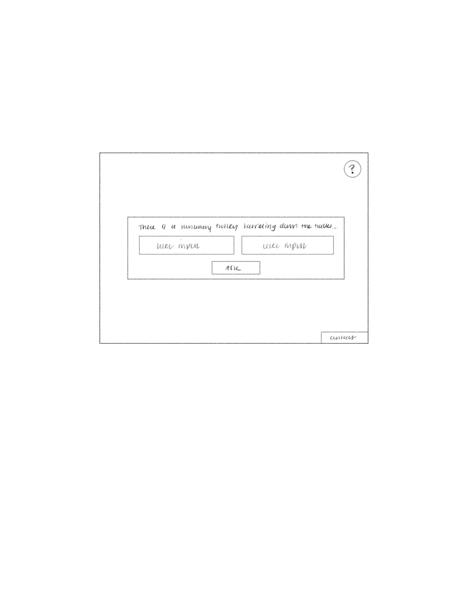
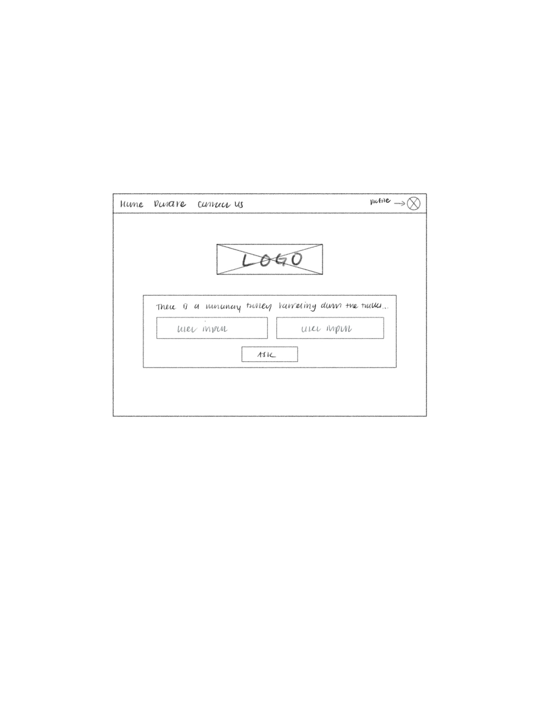

-
Using the favorite website you chose in homework 1, create a wireframe for one page of it using pen/paper, PowerPoint, or any your tool of choice. (use the 'img' tag!) Make sure to let us know what the name of your website is (Use the 'p' tag!)

The name of the website is GPTrolley
-
Try to improve the website you've chosen, and create a redesigned wireframe of one page for the same website using the principles of visual hierarchy that you learned from the article.

-
What is the goal of the website? Who is it intended for? How does the design accomplish this? Write 2-3 sentences answering these questions. (Use the 'p' tag again!)
The goal of the original website is simple, it has AI decide what or who to save in the trolley problem, giving an explanation for its decision. The website is intended for everyone. The website accomplishes this most likeley by incorporating open AI and coding places where the user can input the options for the AI.
-
Write 2-3 sentences about what problems your redesign addressed, and how it solved them.
A problem that my redesign addressed was that the logo did not appear at all in the original website, making it hard to identify from the user's perspective. Another issue that I kind of addressed was that "info" and the contact info were in seperate places. I added a header where all of those can be accessed in a simple and straightforward manner.
NOTE: Make sure to include the wireframe images in the website and don't just put it in your assets folder!
Your wireframes should look something like this: